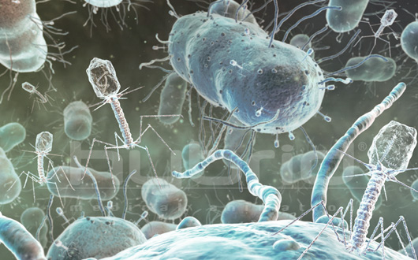
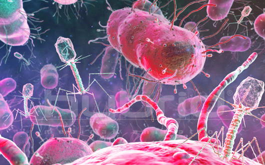
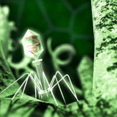

Пиобактериофаг поливалентный очищенный
Несколько картинок, стоящие подряд, автоматически объединяются в слайдер
 Бактериофаги – незримо присутствуют повсюду в нашем мире – в океане, почве, глубоководных источниках, питьевой воде и пище. Они – наиболее представленная форма жизни на Земле – от 1030 до 1032 фаговых частиц в биосфере, - и играют ключевую роль в поддержании баланса всех исследованных экосистем. Бактериофаги являются естественными регуляторами и борцами с бактериями и обеспечивают динамическое равновесие в природе, сохраняя относительно постоянство микробного пейзажа в природе и ограничивая рост популяции бактерий. Бактериофаги присутствуют даже в нашей пище – ежедневное поедание бактериофагов с пищей, в которой они присутствуют естественным образом, регулирует микробный баланс в организме человека.
Одиночная картинка
Знаменитый ученый Д. Эрелль представил миру бактериофаги как естественные антибактериальные агенты и предложил использовать их для терапии - еще до открытия антибиотиков.
Применение
Взрослым
Использованием препарата целесообразно определить чувствительность возбудителя заболевания к бактериофагу стафилококковому. С учетом локализации очага инфекции, препарат может применяться:
- местно — в виде орошений, промываний, полосканий, вливаний, закапываний, аппликаций, тампонов, турунд;
- путем введения внутрь полостей (брюшную, плевральную, суставную, мочевого пузыря) через капиллярный дренаж, катетер;
- путем приема внутрь (per os);
- путем введения в прямую кишку (per rectum) с помощью клизмы;
- при лечении гнойно-воспалительных заболеваний с локализованными поражениями препарат целесообразно применять наружно и внутрь одновременно (в течение 7–20 дней).
Дозы препарата определяются характером очага инфекции и составляют:
- до 200 мл (с учетом размеров пораженного участка) — для орошений, примочек, тампонов;
- до 100 мл — для введения внутрь полостей (плевральную, суставную, другие ограниченные полости), вводят через капиллярный дренаж, который оставляют на несколько дней для повторных введений;
- 10–20 мл — для вливаний в рану при остеомиелите (после соответствующей хирургической обработки);
Детям
Детям в возрасте до 11 лет миндалины целесообразно обрабатывать с помощью шприца (или груши) и закапывать препарат в нос — для обработки задней поверхности глотки; дети старшего возраста могут полоскать зев и закапывать небольшое количество (2 мл) препарата в нос. Рекомендуемые возрастные дозы препарата для приема внутрь (per os) и в клизме (per rectum)
Какие проблемы решают наши препараты
-
Селективность действия
Для лечения заболеваний в косметологической клинике наши врачи косметологи используем методы, эффективность и безопасность которых доказана многолетней практикой применения. -
Наименование проблемы, краткое описание в заголовке
Для лечения заболеваний в косметологической клинике наши врачи косметологи используем методы, эффективность и безопасность которых доказана многолетней практикой применения. Препарат используется в сочетании с другими антибактериальными средствами, а также в качестве монотерапии.
Бактериофаги присутствуют даже в нашей пище – ежедневное поедание бактериофагов с пищей, в которой они присутствуют естественным образом, регулирует микробный баланс в организме человека.
Для лечения заболеваний в косметологической клинике наши врачи косметологи используем методы, эффективность и безопасность которых доказана многолетней практикой применения. Препарат используется в сочетании с другими антибактериальными средствами, а также в качестве монотерапии.
Какие проблемы решают наши препараты
Если у картинки есть атрибут title, под ней появляется подпись.
Бактериофаги – незримо присутствуют повсюду в нашем мире – в океане, почве, глубоководных источниках, питьевой воде и пище. Они – наиболее представленная форма жизни на Земле – от 1030 до 1032 фаговых частиц в биосфере, - и играют ключевую роль в поддержании баланса всех исследованных экосистем.
Бактериофаги являются естественными регуляторами и борцами с бактериями и обеспечивают динамическое равновесие в природе, сохраняя относительно постоянство микробного пейзажа в природе и ограничивая рост популяции бактерий.
Бактериофаги присутствуют даже в нашей пище – ежедневное поедание бактериофагов с пищей, в которой они присутствуют естественным образом, регулирует микробный баланс в организме человека.
Знаменитый ученый Д, Эрелль представил миру бактериофаги как естественные антибактериальные агенты и предложил использовать их для терапии - еще до открытия антибиотиков.
Таблица
| Название препарата | Цена | Форма |
|---|---|---|
|
Секстафаг® (Пиобактериофаг поливалентный) |
650 р. |
раствор для приема внутрь, местного и наружного применения, фл. 20мл №4 |
| 350 р. |
раствор для приема внутрь, местного и наружного применения, фл. 10мл №2 |
|
|
Секстафаг® (Пиобактериофаг поливалентный) |
650 р. |
раствор для приема внутрь, местного и наружного применения, фл. 20мл №4 |
|
Секстафаг® (Пиобактериофаг поливалентный) |
650 р. |
раствор для приема внутрь, местного и наружного применения, фл. 20мл №4 |